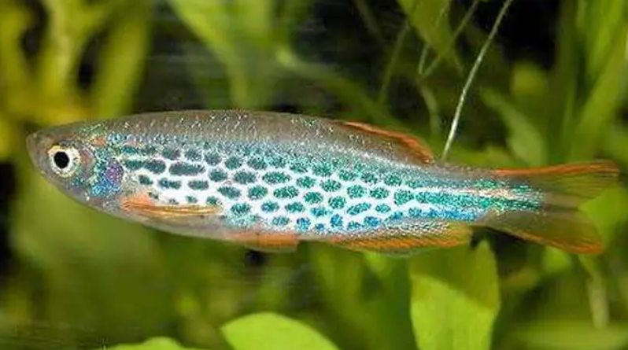
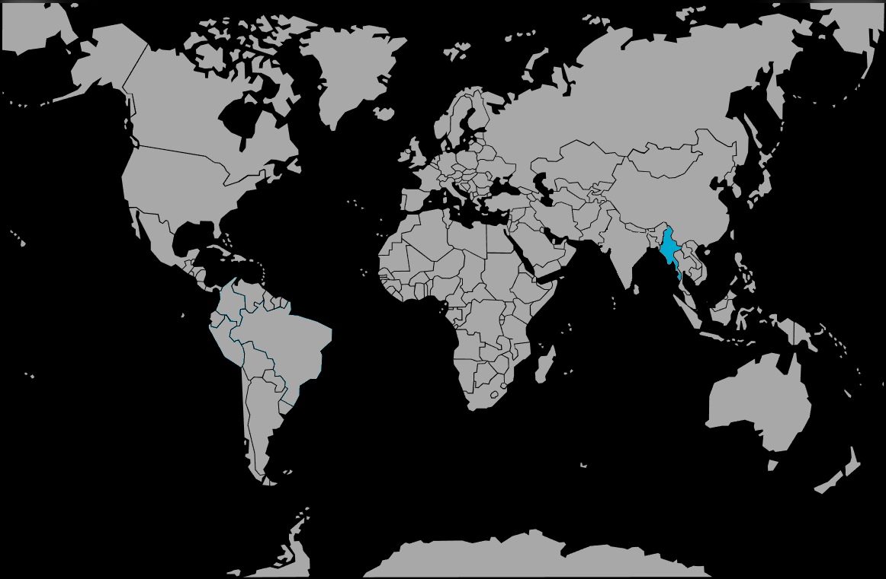

Systématique
- Ordre : Cypriniformes
- Famille : Danionidae
- Genre : Danio
- Espèce : D. kyathit
- Syn. : -
- Groupe : Danios

Danio kyathit est une espèce de cyprinidé originaire du Myanmar, décrite scientifiquement en 1998. Son nom d'espèce, kyathit, signifie "Léopard" en birman, faisant référence à la forme tachetée de l'espèce.
Il mesure environ 4 à 5 cm. Il se distingue de son proche cousin le poisson-zèbre (Danio rerio) par ses motifs. Il existe deux morphotypes principaux :
- La forme "tachetée" (souvent considérée comme la forme type) qui présente des lignes de points sombres sur les flancs.
- La forme "rayée" (souvent appelée "Orange Finned Danio") qui présente des lignes continues.
Quelle que soit la forme, les nageoires (dorsale, anale et caudale) sont généralement bordées d'une coloration orange vif, très attractive en aquarium planté.
C'est un poisson grégaire, vif et pacifique. Il doit être maintenu en banc d'au moins 8 à 10 individus pour limiter le stress et observer des comportements sociaux naturels.
C'est un nageur actif qui occupe la partie supérieure de la colonne d'eau. Bien que communautaire, son activité incessante peut stresser des espèces trop calmes ou timides. Comme tous les Danios, c'est un excellent sauteur : l'aquarium doit être impérativement couvert.
Mode : ovipare.
C'est un diffuseur d'œufs qui ne prodigue aucun soin parental. La reproduction est similaire à celle de Danio rerio : le couple ou le groupe fraie au-dessus d'une végétation dense ou d'un substrat grossier. Les œufs sont non adhésifs.
Les adultes sont de grands consommateurs de leurs propres œufs. Pour réussir l'élevage, il est nécessaire d'utiliser une grille de ponte ou un lit de billes et de retirer les parents après le frai.
Dimorphisme sexuel : Les femelles matures sont visiblement plus rondes et plus grandes au niveau de l'abdomen que les mâles. Les mâles sont plus sveltes et affichent souvent une coloration orange plus intense sur les nageoires et les flancs.
Espérance de vie : Environ 3 à 5 ans en captivité.
Il est endémique du nord du Myanmar (État de Kachin), dans le bassin supérieur de l'Irrawaddy. Il fréquente les petits cours d'eau et les ruisseaux forestiers, parfois aux eaux claires et rapides, parfois aux eaux plus calmes et boueuses, souvent bordés de végétation dense (bambous).
Répartition

Origine naturelle :
- Asie du Sud-Est.
- Myanmar (Birmanie).
- Bassin supérieur de l'Irrawaddy (région de Myitkyina).
Paramètres de maintenance
Température : 16 à 26 °C (tolère bien les eaux fraîches, idéalement 22-24°C).
pH : 6,5 à 7,5.
GH : 5 à 15 °dGH.
Courant : Modéré à fort, apprécie une eau bien oxygénée.
Volume conseillé : Minimum 80 à 100 L. Il nécessite une bonne longueur de façade (minimum 80 cm) pour satisfaire son besoin de nage rapide.
Régime alimentaire
Régime : omnivore à tendance insectivore.
Dans la nature, il se nourrit d'insectes aquatiques et de leurs larves.
En aquarium, il n'est pas difficile et accepte les paillettes et granulés. Cependant, pour maintenir ses couleurs orangées, une alimentation régulière à base de proies vivantes ou congelées (daphnies, artémias, vers de vase) est fortement recommandée.